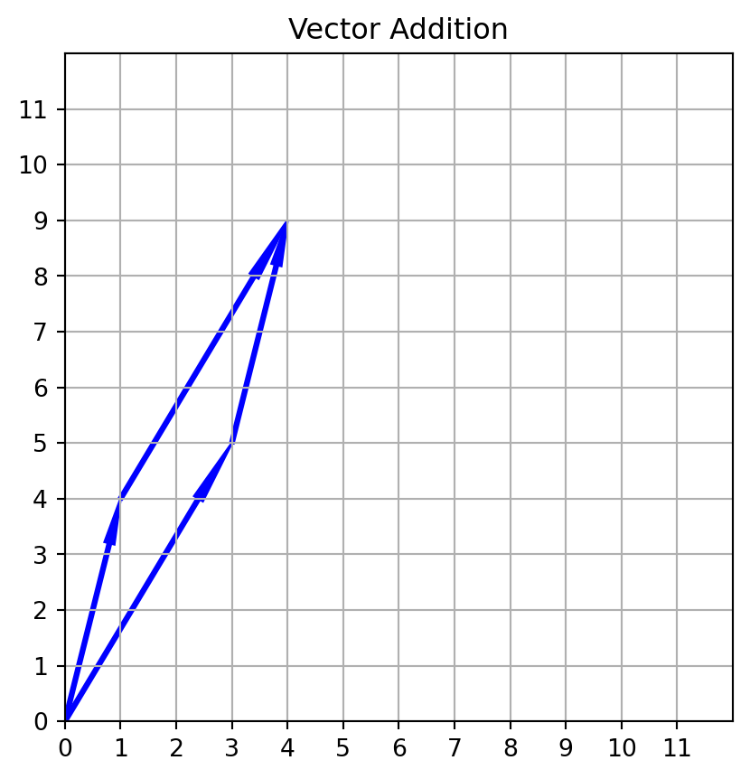
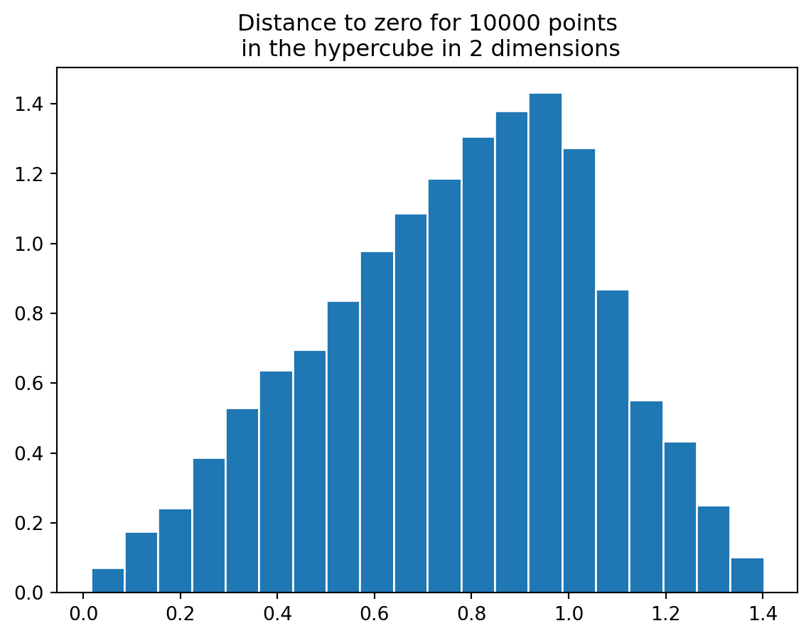
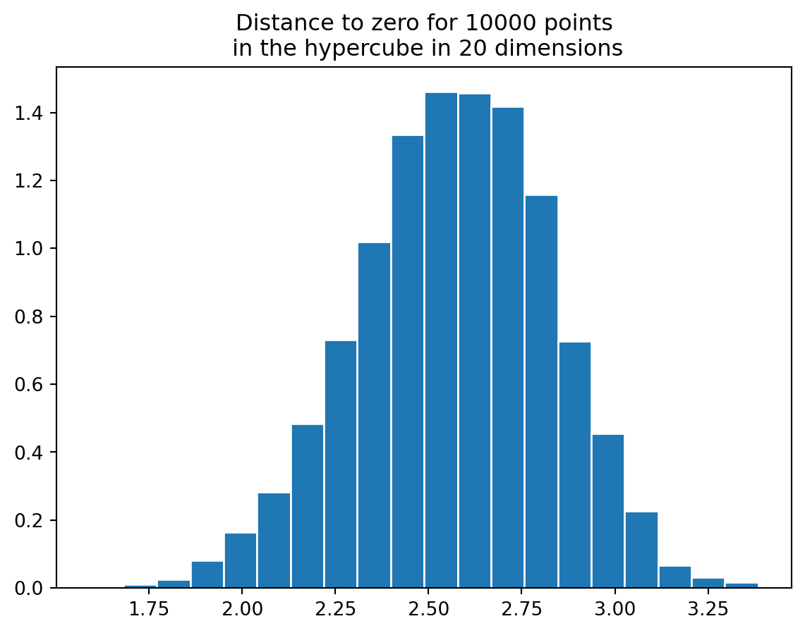
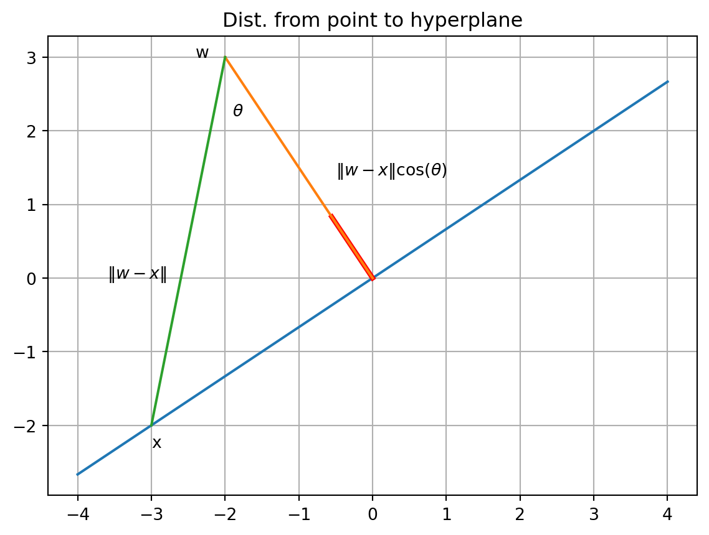

import pandas as pd
import numpy as np
import matplotlib.pyplot as plt
from matplotlib.patches import Arrow
def make_plot(xmin, ymin, xmax, ymax):
fig, ax = plt.subplots()
ax.set_xlim(xmin, xmax)
ax.set_ylim(ymin, ymax)
ax.set_xticks(np.arange(xmin, xmax, 1))
ax.set_yticks(np.arange(ymin, ymax, 1))
ax.set_aspect("equal")
ax.grid(visible=True)
return fig, ax
def draw_arrow(x0, y0, x1, y1, axes, color="blue", alpha=1):
axes.add_patch(Arrow(x0, y0, x1 - x0, y1 - y0, width=0.3, color=color, alpha=alpha))
return axesEssential Linear Algebra
Fundamentals of Data Science
R and Python
For a look at linear algebra basics in R and Python, see:
Vectors and Scalars
\(\mathbf{R}^{n}\) is the set of vectors (ordered tuples) of real numbers of length \(n\). A scalar is a real number.
- Vectors are added componentwise.
- A vector can be multiplied by a scalar.
Addition
fig, ax = make_plot(0, 0, 12, 12)
ax.set_title("Vector Addition")
ax = draw_arrow(0, 0, 3, 5, ax)
ax = draw_arrow(0, 0, 1, 4, ax)
ax = draw_arrow(1, 4, 4, 9, ax)
ax = draw_arrow(3, 5, 4, 9, ax)
plt.show()
Scalar Multiplication
fig, ax = make_plot(0, 0, 12, 12)
ax.set_title("Scalar Multiplication")
ax = draw_arrow(0, 0, 3, 5, ax)
ax = draw_arrow(0, 0, 6, 10, ax, color="red", alpha=0.5)Geometric Interpretation in 2 and 3 dimensions
Feature Space
Each ‘dimension’ in feature space corresponds to a ‘feature’ or measurement of the data. Here we are assuming for now that the features are continuous and measured by real numbers.
Let’s choose some numerical features of the penguins dataset.
data = pd.read_csv("data/penguins-raw.csv")
data = (
data[
[
"Culmen Length (mm)",
"Culmen Depth (mm)",
"Flipper Length (mm)",
"Body Mass (g)",
]
]
.dropna()
.values
)Each penguin is represented by a vector in \(\mathbf{R}^{4}\). So for example penguin number 34 is represented as follows.
data[34, :]array([ 39.2, 21.1, 196. , 4150. ])This abstraction of penguins into vectors is sometimes called “an embedding”.
Features
We can also look at a single feature for all of the penguins. For example, ‘Culmen Length (mm)’ is a feature and there is a vector in \(\mathbf{R}^{342}\) consisting of all of the Culmen Lengths for all of the penguins.
In the tidy convention, we summarize our data in an array or matrix where each row corresponds to a sample and each column to a feature. So our penguin data has \(342\) rows (corresponding to the 342 penguins with no missing data) and 4 columns corresponding to four features.
Image Embeddings
Each sample in the MNIST database is a \(28x28\) gray scale image, represented by a \(28\times 28\) array of integers between 0 and 255.
with open("data/train-images.idx3-ubyte", "rb") as f:
f.read(16)
buf = f.read(28 * 28)
data = np.frombuffer(buf, dtype=np.uint8).astype(np.float32)
data = data.reshape(1, 28, 28)
for x in range(28):
for y in range(28):
print("{:>4}".format(int(data[0, x, y])), end="")
print("\n")
image = np.asarray(data[0].squeeze())
plt.imshow(image) 0 0 0 0 0 0 0 0 0 0 0 0 0 0 0 0 0 0 0 0 0 0 0 0 0 0 0 0
0 0 0 0 0 0 0 0 0 0 0 0 0 0 0 0 0 0 0 0 0 0 0 0 0 0 0 0
0 0 0 0 0 0 0 0 0 0 0 0 0 0 0 0 0 0 0 0 0 0 0 0 0 0 0 0
0 0 0 0 0 0 0 0 0 0 0 0 0 0 0 0 0 0 0 0 0 0 0 0 0 0 0 0
0 0 0 0 0 0 0 0 0 0 0 0 0 0 0 0 0 0 0 0 0 0 0 0 0 0 0 0
0 0 0 0 0 0 0 0 0 0 0 0 3 18 18 18 126 136 175 26 166 255 247 127 0 0 0 0
0 0 0 0 0 0 0 0 30 36 94 154 170 253 253 253 253 253 225 172 253 242 195 64 0 0 0 0
0 0 0 0 0 0 0 49 238 253 253 253 253 253 253 253 253 251 93 82 82 56 39 0 0 0 0 0
0 0 0 0 0 0 0 18 219 253 253 253 253 253 198 182 247 241 0 0 0 0 0 0 0 0 0 0
0 0 0 0 0 0 0 0 80 156 107 253 253 205 11 0 43 154 0 0 0 0 0 0 0 0 0 0
0 0 0 0 0 0 0 0 0 14 1 154 253 90 0 0 0 0 0 0 0 0 0 0 0 0 0 0
0 0 0 0 0 0 0 0 0 0 0 139 253 190 2 0 0 0 0 0 0 0 0 0 0 0 0 0
0 0 0 0 0 0 0 0 0 0 0 11 190 253 70 0 0 0 0 0 0 0 0 0 0 0 0 0
0 0 0 0 0 0 0 0 0 0 0 0 35 241 225 160 108 1 0 0 0 0 0 0 0 0 0 0
0 0 0 0 0 0 0 0 0 0 0 0 0 81 240 253 253 119 25 0 0 0 0 0 0 0 0 0
0 0 0 0 0 0 0 0 0 0 0 0 0 0 45 186 253 253 150 27 0 0 0 0 0 0 0 0
0 0 0 0 0 0 0 0 0 0 0 0 0 0 0 16 93 252 253 187 0 0 0 0 0 0 0 0
0 0 0 0 0 0 0 0 0 0 0 0 0 0 0 0 0 249 253 249 64 0 0 0 0 0 0 0
0 0 0 0 0 0 0 0 0 0 0 0 0 0 46 130 183 253 253 207 2 0 0 0 0 0 0 0
0 0 0 0 0 0 0 0 0 0 0 0 39 148 229 253 253 253 250 182 0 0 0 0 0 0 0 0
0 0 0 0 0 0 0 0 0 0 24 114 221 253 253 253 253 201 78 0 0 0 0 0 0 0 0 0
0 0 0 0 0 0 0 0 23 66 213 253 253 253 253 198 81 2 0 0 0 0 0 0 0 0 0 0
0 0 0 0 0 0 18 171 219 253 253 253 253 195 80 9 0 0 0 0 0 0 0 0 0 0 0 0
0 0 0 0 55 172 226 253 253 253 253 244 133 11 0 0 0 0 0 0 0 0 0 0 0 0 0 0
0 0 0 0 136 253 253 253 212 135 132 16 0 0 0 0 0 0 0 0 0 0 0 0 0 0 0 0
0 0 0 0 0 0 0 0 0 0 0 0 0 0 0 0 0 0 0 0 0 0 0 0 0 0 0 0
0 0 0 0 0 0 0 0 0 0 0 0 0 0 0 0 0 0 0 0 0 0 0 0 0 0 0 0
0 0 0 0 0 0 0 0 0 0 0 0 0 0 0 0 0 0 0 0 0 0 0 0 0 0 0 0
<matplotlib.image.AxesImage at 0x7f9244058910>
Here we can view each image as a vector in a 784 dimensional (=28*28) space.
A collection of 100 images would be represented by an array with 100 rows and 784 columns
A 28x28 image in color has 28283 numbers to account for the RGB channels.
One Hot Embedding
Normally categorical variables don’t embed direcly into \(\mathbf{R}^{n}\) but one can use “one-hot” embedding.
Suppose our categorical vector has 4 levels: red, green, blue, orange.
The “one-hot” embedding uses four features, and each color corresponds to a vector with a one in the column corresponding to the color and zeros elsewhere.
| red | green | blue | orange |
|---|---|---|---|
| 1 | 0 | 0 | 0 |
| 0 | 1 | 0 | 0 |
| 0 | 0 | 1 | 0 |
| 0 | 0 | 0 | 1 |
So to use one-hot encoding of our feature data, we’d add four columns to our data matrix.
Word embeddings
Word2vec is a technique developed by scientists at google that embeds a vocabulary into \(\mathbf{R}^{n}\). Each of 3 million words has a 300 dimensional vector representing it.
The Curse of Dimensionality
Our intuition misleads us when we think about high dimensional space. There is just vastly more “space” in high dimensional space then we expect.
One way to see this is to compare the unit sphere in \(\mathbf{R}^{n}\) and the unit cube in \(\mathbf{R}^{n}\).
In the plane, the unit cube has volume 4 and the unit circle has volume 3.14. So the unit circle fills up most of the cube. Given vectors with coordinates \((x,y)\) between \(-1\) and \(1\), about 75 percent are within distance one of the origin.
rng = np.random.default_rng()
def hypercube(n,d):
data = rng.uniform(-1,1,size=(n,d))
r = np.linalg.norm(data,axis=1)
hist, edges = np.histogram(r,bins=20,density=True)
fig = plt.figure()
axes = fig.subplots()
axes.bar(x=edges[:-1], height=hist,align='edge',width=edges[1]-edges[0],edgecolor='white')
axes.set_title("Distance to zero for {} points\n in the hypercube in {} dimensions".format(n,d))
hypercube(10000,2)
In 20 dimensions, the situation is quite different. The hypercube has volume 2^{20} (this volume grows exponentially with the dimension) while the sphere has volume \[ \frac{\pi^{10}}{10!}=.025 \]
If you compare the distribution you see that most of the points are very far from the origin; basically none are within the unit sphere.
hypercube(10000,20)
This means that even huge numbers of points in relatively high dimensions are very sparsely distributed.
Linear combinations
If \(v_1,\ldots, v_k\) are vectors in \(\mathbf{R}^{n}\) then a weighted sum of the \(v_{i}\) is called a linear combination.
\[ w = \sum b_{i}v_{i} \]
Suppose our data is the performance of students on 2 homeworks, 1 midterm, and one final, all scored on a 100 points scale, with each homework worth 10% of the total, the midterm worth 25% and the final worth 55%. If there are 20 students our data is a \(20 x 4\) array with each row having the grades of a single student and each column having all the scores for a particular assignment.
Let \(v_1, v_2, v_3, v_4\) be the four columns. Then the final score is the linear combination \[ s=.1v_1+.1v_2+.25v_3+.55v_4 \]
The vector \(s\), the score, is a linear combination of the features.
Linear Dependence and Linear Independence
In the example above, the final score is a linear combination of the features. We say that the final score is dependent on the features. More generally, a collection of vectors is linearly dependent if there are constants, not all zero, so that
\[ b_1v_1+...+b_kv_k=0. \]
If they’re dependent, it means one of them can be written in terms of the other.
If they aren’t dependent, they are independent. This means that the only way you can get \[ b_1v_1+...+b_kv_k=0 \] is if all the constants are zero.
None of the vectors can be written in terms of the others.
Mathematically, dependence is an exact relationship.
Linear relations in python
vectors = [np.random.uniform(size=8) for i in range(5)] # 10 random vectors
scalars = [np.random.normal() for i in range(5)] # 10 random scalars
prods = [scalars[i] * vectors[i] for i in range(5)] # products
result = sum(prods) # sum of products
print(result)[-2.05819278 -2.67603538 -1.96513374 -2.26124284 -2.21024428 -1.42506644
-2.85392633 -3.00973004]Approximate linear dependence
Sometimes two features are “almost” linearly related.
In an old dataset about car models, with 398 types of cars and 9 features, two features are “miles per gallon” and “engine displacement”. If we look at mpg and displacement relative to their means by subtracting their averages values, we see that
Here, miles per gallon (relative to its mean value) is roughly linearly dependent on displacement (relative to its mean). \[ \mathrm{mpg}-\overline{\mathrm{mpg}} = -.0603(\mathrm{disp}-\overline{\mathrm{disp}}) \]
So we don’t learn much new from ‘mpg’ that isn’t already in ‘displacement’.
import statsmodels.api as sm
mpg = pd.read_csv("data/auto-mpg.csv")
x = mpg["displacement"].values
x = x - np.mean(x)
y = mpg["mpg"].values
y = y - np.mean(y)
x1 = sm.add_constant(x)
model = sm.OLS(y, x1).fit()
x0 = np.linspace(-100, 300, 10)
x1 = sm.add_constant(x0)
predictions = model.predict(x1)
plt.scatter(x, y)
plt.plot(x0, predictions, color="red")
plt.title("Miles per Gallon vs Engine Displacement")
plt.xlabel("Displacement")Text(0.5, 0, 'Displacement')Linear Regression (studied later) tries to capture this.
Span
The span of a collection of vectors is the set of all linear combinations of those vectors.
Basis and dimension
A basis is a linearly independent, spanning set. The number of elements in a basis is always the same; it is called the dimension of the vector space.
The dimension of \(\mathbf{R}^{n}\) is \(n\) (the standard vectors are independent and span).
Distances and the euclidean norm
The norm of a vector \(v=(a_1,\ldots, a_n)\) is \[ \|v\| = (\sum a_{i}^2)^{1/2} \]
It is the “length” of the vector.
The Euclidean distance between two points \(v\) and \(w\) is \[ \|v-w\| \]
Mean Squared Error in vector form
Remember our example the “almost” dependence of mpg and displacement.
mpg0 = mpg["mpg"] - np.mean(mpg["mpg"])
disp0 = mpg["displacement"] - np.mean(mpg["displacement"])
predicted = -0.0603 * disp0
plt.scatter(disp0, mpg0)
plt.scatter(disp0, predicted)
plt.title("MSE={:.2f}".format(np.linalg.norm(mpg0 - predicted) / mpg0.shape[0]))Text(0.5, 1.0, 'MSE=0.23')The mean squared error is the squared distance between a true and predicted value, divided by the number of values.
The dot product
Suppose we have two vectors: \[\begin{aligned} v_1 & =[a_1,a_2,\dots, a_n] \\ v_2 &= [b_1,b_2,\ldots, b_n] \end{aligned} \]
The “dot product” or “inner product” of these two vectors is: \[ v_1\cdot v_2 = \sum_{i=1}^{n} a_i b_i. \]
Important: The dot product *converts two vectors into a scalar!
Properties of the dot product
- \(v_1\cdot v_1 = \|v_1\|^2\)
- \((av_1+bv_2)\cdot v_3 = a(v_1\cdot v_2) + b(v_2\cdot v_2)\)
- \(v_1\cdot v_2 = v_2 \cdot v_1\).
Angles and Cauchy-Schwartz
The law of cosines: \[\|v_1\|^2+\|v_2\|^2 - 2\|v_1\|\|v_2\|\cos(\theta) =\|v_1-v_2\|^2\]
means that
\[ v_1\cdot v_2 = \|v_1\|\|v_2\|\cos(\theta) \tag{1}\]
In particular:
\[|v_1\cdot v_2|\le \|v_1\|\|v_2\| \tag{2}\]
This says \[ |\sum_{i=1}^{n} a_{i}b_{i}|^2\le (\sum_{i=1}^{n} a_{i}^2)(\sum_{i=1}^{n} b_{i}^2) \]
Equation 2 is called the “Cauchy-Schwartz inequality.”
Python
Listing 1: Dot product computation
# python
v = np.array([1,2,3,4,5])
w = np.array([2,4,6,8,10])
print('Entry by entry product = {}'.format(v*w)) # <1>
print('Dot product = {}'.format(np.dot(v,w))) # <2>Note: In R, the symbol for dot product is %*%.
In Listing 1 we show how to compute the dot product in python.
Orthogonality
If \(v_1\cdot v_2=0\) then either one of \(v_1\) or \(v_2\) is zero, or the angle between then is 90 degrees.
In this case we saw the vectors are orthogonal.
Unit vectors and projection
A vector \(u\) is a unit vector if \(u\cdot u=1\).
The quantity \(v\cdot u\) measures the projection of \(v\) into the direction given by \(u\).
Variance, Correlation and cosine similarity
If \(v\) is a feature vector, let \(\overline{v}=\frac{1}{n}\sum_{i=1}^{n} v_{i}\).
Notice that \(\overline{v}=\frac{v\cdot E}{n}\) where \(E\) is the vector with \(1\) in each entry.
\[ \|(v-\overline{v}E)\|=\sigma^{2} \]
Covariance
If \(v\) and \(w\) are two vectors, their covariance is \[ \sigma_{vw} = \frac{(v-\overline{v}E)\cdot (w-\overline{w}E)}{n} \]
Correlation
The correlation coefficient of \(v\) and \(w\) is \[ r_{vw} = \frac{\sigma_{vw}}{\sigma_{v}\sigma_{w}}=\frac{|(v-\overline{v}E)\cdot(w-\overline{w}E)|}{\|v-\overline{v}E)\|\|w-\overline{w}E\|}=\cos\theta \]
It measures the cosine of the angle between \(v-\overline{v}E\) and \(w-\overline{w}E\).
Cosine similarity
In general,
\[ \cos(\theta) = \frac{v\cdot w}{\|v\|\|w\|} \] measures the angle between two feature vectors and is a measure of “similarity” between \(0\) and \(1\).
Hyperplanes
A (linear) hyperplane is a subspace of dimension \(n-1\) in a vector space of dimension \(n\). It is given by an equation of the form
\[ \sum a_{i}x_{i}=0. \]
Geometrically this can be written \(v\cdot x=0\) where \(v=[a_1,\ldots, a_n]\) and \(x=[x_1,\ldots, x_n]\). The vector \(v\) is called the normal vector to the hyperplane.
An (affine) hyperplane is given by an equation of the form \[ v\cdot x = b \] for some constant \(b\)
x = np.linspace(-5, 5, 10)
y = 2 / 3 * x
plt.plot(x, y)
plt.grid(True)
plt.gca().set_aspect("equal")
plt.plot([0, -2], [0, 3])
plt.plot([-2, -2], [3, 2])
plt.plot([-2, -1], [3, 2.6])
plt.title("Hyperplane 2x-3y=0 with normal vector [-2,3]")Text(0.5, 1.0, 'Hyperplane 2x-3y=0 with normal vector [-2,3]')Affine hyperplanes
For fixed \(v\) and varying \(b\), the hyperplanes \(v\cdot x=b\) form a parallel family.
Distance from a point to a hyperplane
The distance from a point \(w\) to the hyperplane \(v\cdot x = b\) is \[ D = \frac{w\cdot v-b}{\|v\|}. \]
This is the projection of the line from \(w\) to a point \(x\) on the hyperplane against the unit normal \(\frac{v}{\|v\|}\).
\[ (w-x)\cdot\frac{v}{\|v\|} =\frac{(w\cdot v -x\cdot v)}{\|v\|} = \frac{(w\cdot v - b)}{\|v\|} \]
x = np.linspace(-4, 4, 10)
y = 2 / 3 * x
plt.plot(x, y)
plt.grid(True)
plt.gca().set_aspect("equal")
plt.title("Dist. from point to hyperplane")
plt.plot([0, -2 / np.sqrt(13)], [0, 3 / np.sqrt(13)], color="red", linewidth=3)
plt.plot([0, -2], [0, 3])
plt.plot([-3, -2], [-2, 3])
plt.text(-2.4, 3, r"w")
plt.text(-3, -2.3, r"x")
plt.text(-3.6, 0, r"$\|w-x\|$")
plt.text(-1.9, 2.2, r"$\theta$")
plt.text(-0.5, 1.4, r"$\|w-x\|\cos(\theta)$")Text(-0.5, 1.4, '$\\|w-x\\|\\cos(\\theta)$')
Matrices
An \(n\times m\) matrix is an array of real numbers with \(n\) rows, \(m\) columns, and a total of \(nm\) entries.
Matrix times Vector
If \(M\) is an \(n\times m\) matrix and \(v\) is an \(m\times 1\) vector (a column vector) then \(Mv\) is the \(n\times 1\) column vector whose entries are \[ M[i,:]\cdot v \] where \(i\) runs from 1 to \(n\). Here \(M[i,:]\) is the \(i^{th}\) row of \(M\).
If \(v\) is a \(1\times n\) row vector then \(vM\) is the \(1\times m\) row vector whose entries are \(v\cdot M[:,i]\) as \(i\) runs from 1 to \(m\).
Matrix times vector is linear
\[M(v+w) = Mv+Mw\] \[M(aw) = aMw\]
Matrix times standard vector gives row/column
If \(v\) is a column vector with a a \(1\) in position \(i\) and zeros elsewhere, then \(Mv\) is the \(i^{th}\) column of \(M\).
If \(v\) is a row vector with a \(1\) in position \(i\) and zeros elsewhere, then \(vM\) is the \(i^{th}\) row of \(M\).
\(Mv\)/\(vM\) gives linear combination of columns/rows
\(Mv\) is a linear combination of the columns of \(M\) weighted by the entries of \(v\).
\(vM\) is a linear combination of the rows of \(M\) weighted by the entries of \(v\).
Matrix times matrix
An \(n\times m\) matrix times an \(m\times k\) matrix yields an \(n\times k\) matrix.
You can view \(MN\) as \(Mv\) where \(v\) runs through the columns of \(N\). Each column has \(n\) rows.
\[ MN=\left[ \begin{matrix} M[0,:]N & M[1,:]N &\cdots&M[m,:]N\\ \end{matrix} \right] \]
OR you can view \(MN\) as \(wN\) where \(w\) runs through the rows of \(M\).
\[ MN = \left[\begin{matrix} MN[:,0] \\ MN[:,1] \\\vdots\\MN[:,k]\end{matrix}\right] \]
OR
you can view \(MN\) where the \(i,j\) entry of \(MN\) is the dot product of the \(i^{th}\) row of \(M\) with the \(j^{th}\) column of \(N\) (each of which has \(m\) entries).
\[(MN)_{ij} = M[i,:]\cdot N[;,j]\]
Python
The ‘@’ sign gives matrix multiplication in python. In R, it’s %*%.
M = np.array([[1, 2, 3], [2, 3, 4], [3, 4, 5]])
v = np.array([[-1], [0], [1]])
print(M)
print(v)
print(M @ v)
print("Compare -M[:,0]+M[:,2] with M@v\n both are {}".format(-M[:, 0] + M[:, 2]))[[1 2 3]
[2 3 4]
[3 4 5]]
[[-1]
[ 0]
[ 1]]
[[2]
[2]
[2]]
Compare -M[:,0]+M[:,2] with M@v
both are [2 2 2]Where does matrix multiplication come from?
If \(v\) is in \(\mathbf{R}^{m}\) as a column vector, and \(M\) is an \(n\times m\) matrix, then \(Mv\in\mathbf{R}^{n}\). So the function \(v\to Mv\) is a function from \(\mathbf{R}^{m}\to \mathbf{R}^{m}\).
Now if \(N\) is a \(k\times n\) matrix, then \(NMv\) is in \(\mathbf{R}^{k}\).
If we want \(N(Mv)=(NM)v\) to be true then this forces the definition of matrix multiplication.
The Matrix Product gives composition of functions
Transpose of a matrix
The transpose \(M^{T}\) of a matrix is the matrix obtained from \(M\) by switching rows and columns.
The transpose switches the order of a product.
\[(MN)^{T}=N^{T}M^{T}\]
Covariance Matrix
Remember that if \(v\) and \(w\) are feature vectors, then \((v-\overline{v})\cdot (w-\overline{w})\) is the covariance of \(v\) and \(w\).
Suppose \(v_1,\ldots, v_n\) are features forming a data matrix \(X\).
Let \(X_{0}\) be the matrix whose columns are \(v_{i}-\overline{v_{i}}\).
Then \(\frac{1}{N}X_{0}^{T}X_{0}\) is \(n\times n\) and called the covariance matrix.
If \(Y_{0}\) is obtained from \(X_{0}\) by dividing each column by its norm, then \(Y_{0}^{T}Y_{0}\) is the correlation matrix – ones on the diagonal, correlation coefficients off diagonal.
data = pd.read_csv("data/penguins-raw.csv")
data = (
data[
[
"Culmen Length (mm)",
"Culmen Depth (mm)",
"Flipper Length (mm)",
"Body Mass (g)",
]
]
.dropna()
.values
)
# axis=0 means take the average of the columns (summarize over rows)
data.mean(axis=0)
# "center" each column; scale column 3
data0 = data - data.mean(axis=0)
print(np.linalg.norm(data0, axis=0))
data0 = data0 / np.linalg.norm(data0, axis=0)
D = data0.transpose() @ data0
print(D)
plt.imshow(D, cmap="hot", interpolation="nearest")
plt.title("covariance matrix heatmap")[ 100.81768459 36.46689639 259.66621062 14809.0410685 ]
[[ 1. -0.23505287 0.65618134 0.59510982]
[-0.23505287 1. -0.58385122 -0.47191562]
[ 0.65618134 -0.58385122 1. 0.87120177]
[ 0.59510982 -0.47191562 0.87120177 1. ]]Text(0.5, 1.0, 'covariance matrix heatmap')plt.scatter(x=data0[:, 2], y=data0[:, 3])<matplotlib.collections.PathCollection at 0x7f91f198a280>
Rank and invertibility
The column rank of a matrix is the dimension of the space spanned by its columns; this is the number of linearly independent columns.
The row rank is the number of linearly independent rows.
Theorem: These two numbers are equal.